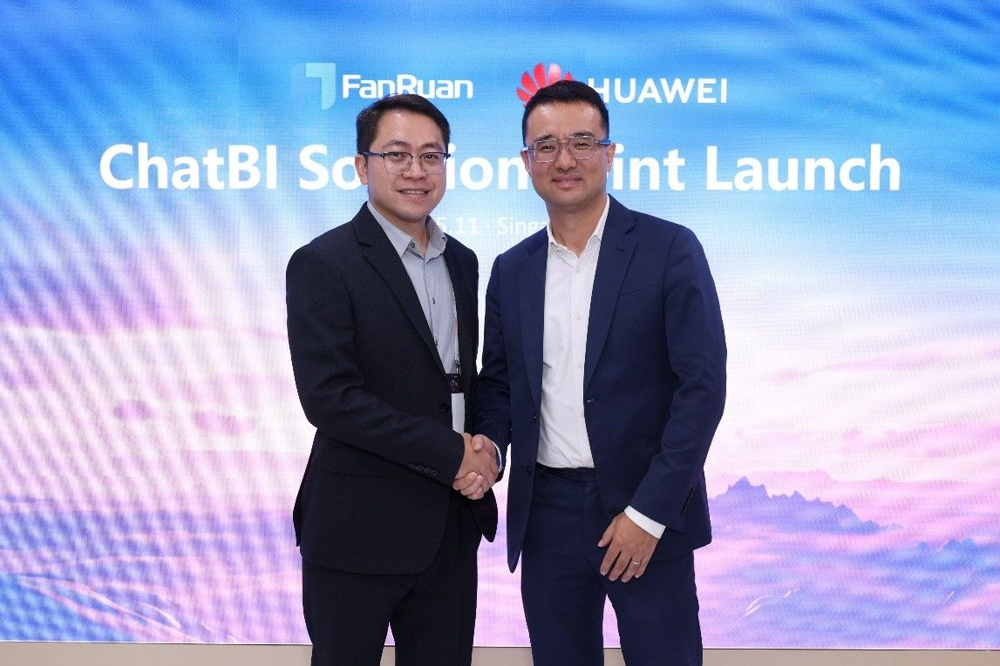

<html>
<title>Huawei Tanıtım</title>
<link rel="stylesheet" type="text/css" href="../haberler.css">
<meta charset="UTF-8">
</html>


<body>


<div class="navigasyon_bar">

	<a href="../haberler.html"> <div class="ic_div">  </div> </a>
	

	<a href="../../huawei_hakkında/huawei_hakkinda.html"> <div class="ic_div"> Huawei Hakkında </div> </a>
	<a href="../../urunler/urunler.html"> <div class="ic_div"> Ürünler </div> </a>

	<a href="../../sürdürülebilirlik/sürdürülebilirlik.html"> <div class="ic_div"> Sürdürülebilirlik </div> </a>

	<a href="../../eğitim/egitim.html"> <div class="ic_div"> Eğitim </div> </a>
	<a href="../../haberler/haberler.html"> <div class="ic_div"> Haberler </div> </a>

</div>

<!------------------------------------------------------------>

<div class="haber_sayfasi">
<h1 class="baslik">
Huawei ve FanRuan, ChatBI Yapay Zeka Destekli Akıllı Karar Verme Çözümünü Piyasaya Sürdü
</h1>

<p class="metin">
<br><br><br>

[Singapur, 13 Kasım 2025] Singapur FinTech Festivali 2025 (SFF 2025) sırasında Huawei ve FanRuan, finans sektöründe akıllı iş analizini ve dijital dönüşümü desteklemeyi amaçlayan yenilikçi ChatBI Yapay Zeka Akıllı Karar Verme Çözümünü ortaklaşa tanıttı. Huawei Dijital Finans İş Birimi Ortak Geliştirme Departmanı Direktörü Roger Wang ve FanRuan Baş Ürün Sorumlusu (CPO) Saber Chen, lansman törenine birlikte katıldı.

<br><br>




Bu ortak çözüm, her iki tarafın teknolojik avantajlarını tam olarak entegre eder. Huawei'nin sunucuları ve Lakehouse Mimarisi gibi dijital altyapısını FanRuan'ın FineBI ve FineChatBI akıllı iş analizi platformlarıyla birleştirerek, veri erişiminden model çıkarımına ve strateji uygulamasına kadar tam süreçli kapalı bir döngü oluşturur. Yenilikçi akıllı karar verme çözümü aşağıdaki senaryoları içerir:

<br><br><br>


• Soru-Cevap Veri Erişimi: Saha personeli, doğal dil sorguları aracılığıyla temel veri göstergelerine hızlıca ulaşabilir ve sorgu verimliliğini onlarca kat artırabilir.<br><br>

• Akıllı Raporlama: İkinci seviye etkileşimli veri analizini desteklemek için büyük dil modeli anlamsal ayrıştırmasını FineBI'ın görselleştirme yetenekleriyle entegre eder.<br><br>

• Yapay Zeka Destekli Karar Verme Sistemi: İş mantığını büyük dil modellerinin akıl yürütme yeteneğiyle birleştirerek otomatik analiz ve erken uyarı sağlayan kapalı bir döngü oluşturur ve karar verme verimliliğini etkin bir şekilde artırır.

 <br><br><br>


Yeni piyasaya sürülen ChatBI Yapay Zeka Akıllı Karar Verme Çözümü, yalnızca Huawei ve FanRuan'ın teknolojik avantajlarının bir entegrasyonu değil, aynı zamanda her iki tarafın da ekolojik ortak refah ve endüstriyel ortak yaratıma olan bağlılığının bir tezahürüdür. Huawei'nin güçlü işlem gücü desteğinden yararlanan çözüm, işletmelerin verilere erişim eşiğini önemli ölçüde düşürüyor ve veri kullanım verimliliğini büyük ölçüde artırıyor. Örneğin, bir ticari banka bu çözümü benimsedikten sonra, daha önce günler süren manuel veri temizleme ve sorgulama işlemleri, ikinci seviye yanıt veren doğal dil veri sorgulamasına dönüştürülerek analiz verimliliği onlarca kat artırıldı.
 <br><br><br>


Huawei'nin güçlü akıllı altyapısını FanRuan'ın veri zekası alanındaki yenilikçi teknolojileriyle birleştirerek, iki taraf birlikte işletmelerin "veriyi görüntülemekten" "veriyi kullanmaya" dönüşümünü destekliyor ve finans sektörünün dijitalleşme sürecini hızlandırmasına ve akıllı karar alma verimliliğini artırmasına yardımcı oluyor.
 <br><br><br>


</p>

</div>


<footer class="alt-banner">
  <h1 class="footer_baslik">HUAWEI</h1>


<div class="ustbar">

	<a href="../../index.html" > 
	</img>
	</a>

		<a href="https://www.facebook.com/HuaweiEnterprise" > 
	</img>
	</a>
<a href="https://www.linkedin.com/company/huawei-enterprise" > 
	</img>
	</a>
<a href="https://x.com/HUAWEient" > 
	</img>
	</a>
<a href="https://www.instagram.com/huaweient/" > 
	</img>
	</a>
<a href="https://www.youtube.com/user/HuaweiEnterprise" > 
	</img>
	</a>
	

</div>


  <div class="foot_divs">
    <a href="https://app.huawei.com/eplus/front/index.html#/download">
      <div class="foot_div1">
        
        Huawei e+ Uygulaması
      </div>
    </a>

    <a href="https://app.huawei.com/eplus/soho/front/index.html#/download">
      <div class="foot_div1">
        
        Huawei eKit Uygulaması
      </div>
    </a>

    <a href="https://m.support.huawei.com/intl/prod/enterprisemobile/brochure/index_en.html">
      <div class="foot_div1">
        
        Huawei HiKnow Uygulaması
      </div>
    </a>

    <a href="https://app.huawei.com/eplus/smb/front/index.html#/download?countryCode=Global">
      <div class="foot_div1">
        
        Huawei eFly Uygulaması
      </div>
    </a>
  </div>

  <div class="foot">
    <a href="https://www.huawei.com/en/contact-us">Bize Ulaşın</a>
    <a href="https://www.huawei.com/en/legal">Kullanım Şartları</a>
    <a href="https://www.huawei.com/en/privacy-policy">Gizlilik Politikası</a>
    <a href="https://www.huaweicloud.com/intl/en-us/">Huawei Bulut</a>
  </div>

  <p class="last_foot">© 2026 Tüm hakları saklıdır</p>
</footer>


</div>

</body>
